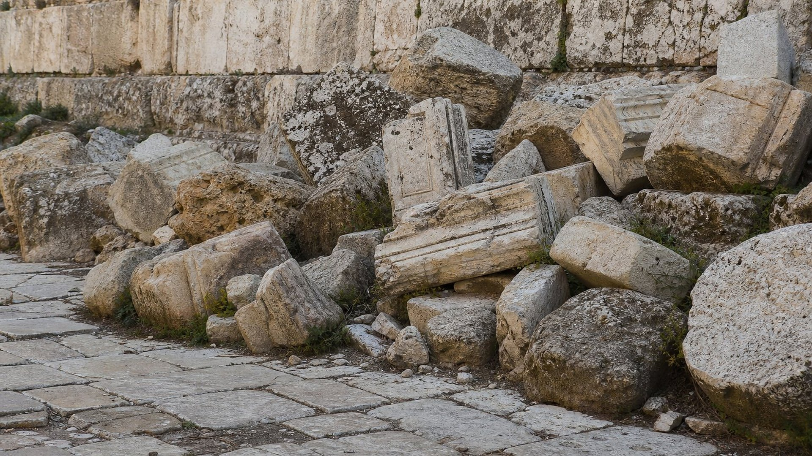
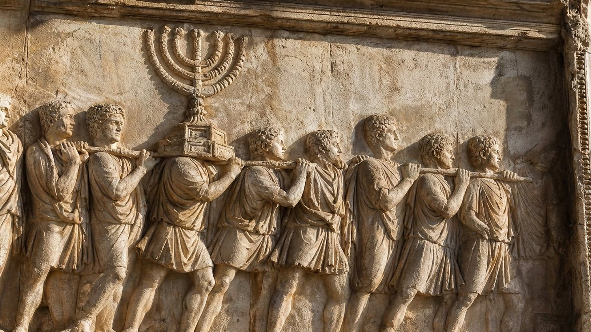
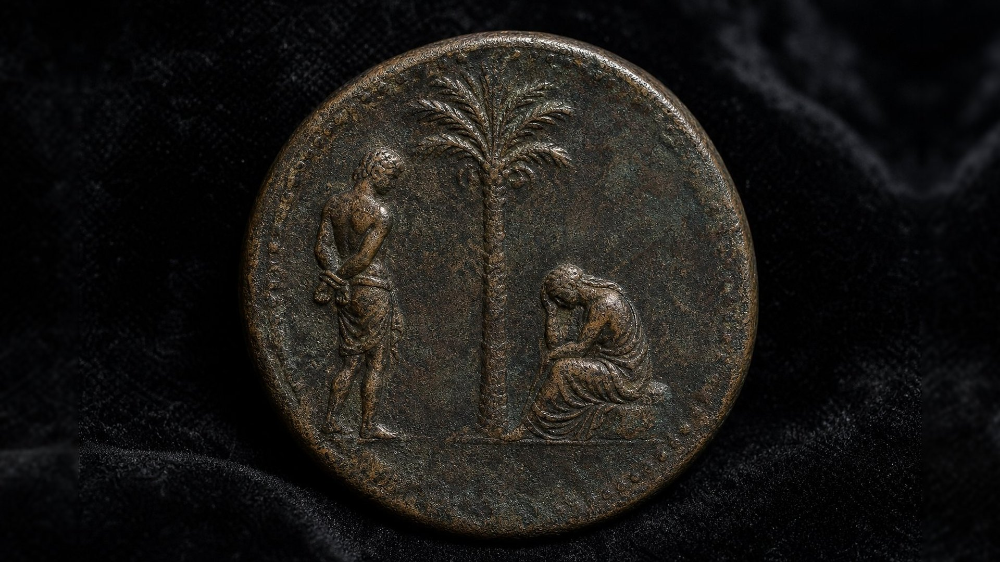

Flavius Josèphe, Guerre des Juifs II, 19, 7 (§ 540)
Automne 66 : le légat de Syrie Cestius Gallus, qui assiège Jérusalem, rappelle ses troupes et se retire « sans aucune raison », sans avoir subi de revers.
Notice de référence (site externe)
Salle 11 sur 17
Une armée, un siège, une fuite : l’avertissement de Jésus mis à l’épreuve des faits.
Statut : ACCOMPLIE
Jérusalem, printemps 33 · Statut : ACCOMPLIE
Quelques jours avant sa mort, Jésus arrive en vue de Jérusalem. La ville est au sommet de sa splendeur : le Temple, agrandi par Hérode, est l’un des plus vastes sanctuaires du monde antique. Pourtant, Luc rapporte que Jésus « pleura sur elle » et annonça un siège implacable.
Deux jours plus tard, ses disciples admirent les blocs gigantesques du Temple. Sa réponse les stupéfie : il ne restera « pas pierre sur pierre ». Puis il leur donne un signal à guetter et une consigne précise : quand ils verront la ville encerclée par des armées, il faudra partir, sans attendre et sans revenir en arrière.
Une prophétie qui fournit à la fois le signe et la conduite à tenir : ses auditeurs pouvaient la vérifier de leur vivant, et leur survie en dépendait. Trente-sept ans plus tard, les événements allaient la mettre à l’épreuve.
Car des jours viendront sur toi, où tes ennemis t’entoureront de tranchées, et t’environneront, et te serreront de tous côtés, et te renverseront par terre, toi et tes enfants au-dedans de toi ; et ils ne laisseront pas en toi pierre sur pierre, parce que tu n’as point connu le temps de ta visitation.
Et quand vous verrez Jérusalem environnée d’armées, sachez alors que sa désolation est proche. Alors, que ceux qui sont en Judée s’enfuient dans les montagnes ; et que ceux qui sont au milieu de Jérusalem s’en retirent ; et que ceux qui sont dans les campagnes n’entrent pas en elle.
Exploration interactive
Sept étapes, d’après les récits de Josèphe, témoin oculaire du siège, et d’Eusèbe. Avancez pas à pas ou lancez la lecture continue : la carte trace l’encerclement, le retrait, la fuite, puis le mur de Titus.
Schéma non à l’échelle
Étape 1 sur 7
Le légat de Syrie, Cestius Gallus, marche sur Jérusalem révoltée avec la 12e légion et des troupes auxiliaires. Il campe au mont Scopus, entre dans la ville neuve et attaque le mur du temple. La ville est « environnée d’armées » (Luc 21:20).
Niveau de preuve : DONNÉE HISTORIQUE D’après Josèphe (PR-090, PR-092, PR-095) et Eusèbe (PR-091).
Automne 66 · fête des Huttes

En 66, la Judée se soulève contre Rome. Le légat de Syrie, Cestius Gallus, rassemble une armée et marche sur Jérusalem. Ses soldats pénètrent jusqu’au mur du temple et commencent à le saper. Beaucoup d’habitants s’attendent à la chute de la ville.
C’est alors que se produit l’inattendu. Josèphe, qui ne dit pas un mot des chrétiens ni de la prophétie dans ce passage, rapporte la scène :
« Cestius […] rappela ses soldats et, renonçant à prendre la ville sans avoir subi le moindre revers, il s’en retira, sans aucune raison au monde. »
Flavius Josèphe, Guerre des Juifs II, 19, 7, § 540 (traduit du grec) · PR-090
Pour le musée, ce répit correspond aux paroles de Jésus : « ces jours-là seront abrégés ». La détresse est écourtée, et ceux qui guettaient le signal peuvent partir. Niveau de preuve : LECTURE PROPHÉTIQUE
Et si ces jours-là n’avaient été abrégés, nulle chair n’aurait été sauvée ; mais, à cause des élus, ces jours-là seront abrégés.

Jésus avait insisté : ne pas redescendre chercher ses affaires, ne pas retourner aux champs, ne pas entrer dans la ville. Il avait même plaint « celles qui sont enceintes et celles qui allaitent en ces jours-là » : la route serait rude.
« Le peuple de l’Église de Jérusalem, averti par un oracle donné avant la guerre à des hommes éprouvés, avait reçu l’ordre de quitter la ville et d’habiter une ville de Pérée nommée Pella. »
Eusèbe de Césarée, Histoire ecclésiastique III, 5, 3 (traduit du grec) · PR-091
Eusèbe écrit au IVe siècle : son témoignage est tardif. Il concorde pourtant avec la consigne donnée dans l’Évangile, et Pella, cité de la Décapole restée en dehors de la révolte, était un refuge logique.
Vérification
Détail 1
« Et quand vous verrez Jérusalem environnée d’armées, sachez alors que sa désolation est proche. »
Ce qui s’est passé
À l’automne 66, le légat de Syrie Cestius Gallus marche sur Jérusalem révoltée. Ses troupes campent au mont Scopus, entrent dans la ville neuve et sapent déjà le mur du temple.
Niveau de preuve : DONNÉE HISTORIQUE Preuves : PR-090
Détail 2
« Et si ces jours-là n’avaient été abrégés, nulle chair n’aurait été sauvée ; mais, à cause des élus, ces jours-là seront abrégés. »
Ce que le musée en lit
Alors que la ville semble perdue, Cestius rappelle ses troupes et se retire « sans aucune raison », écrit Josèphe. Le musée lit dans ce répit inattendu l’accomplissement des paroles de Jésus : la détresse est écourtée, et ceux qui ont tenu compte de l’avertissement peuvent partir.
Niveau de preuve : LECTURE PROPHÉTIQUE Preuves : PR-090
Détail 3
« Alors, que ceux qui sont en Judée s’enfuient dans les montagnes ; et que ceux qui sont au milieu de Jérusalem s’en retirent ; et que ceux qui sont dans les campagnes n’entrent pas en elle. »
Ce qui s’est passé
Selon Eusèbe, les chrétiens de Jérusalem quittent alors la ville et s’établissent à Pella, au-delà du Jourdain, dans les collines de la Décapole, à environ 80 km à vol d’oiseau. Le témoignage est tardif, mais il concorde avec l’avertissement donné dans l’Évangile.
Niveau de preuve : DONNÉE HISTORIQUE Preuves : PR-091
Détail 4
« Car des jours viendront sur toi, où tes ennemis t’entoureront de tranchées, et t’environneront, et te serreront de tous côtés … »
Ce qui s’est passé
Au printemps 70, Titus revient avec quatre légions. Pour affamer la ville, il la fait entourer d’un mur de 39 stades, soit environ 7 km, garni de 13 postes de garde : un ouvrage achevé, selon Josèphe, en trois jours.
Niveau de preuve : DONNÉE HISTORIQUE Preuves : PR-092
Détail 5
« … et te renverseront par terre, toi et tes enfants au-dedans de toi ; et ils ne laisseront pas en toi pierre sur pierre, parce que tu n’as point connu le temps de ta visitation. »
Ce qui s’est passé
La famine, les luttes entre factions et l’assaut final font un nombre immense de victimes ; les survivants sont emmenés captifs. Josèphe avance des chiffres que les historiens jugent très exagérés, mais l’ampleur de la catastrophe n’est pas contestée.
Niveau de preuve : DONNÉE HISTORIQUE Preuves : PR-092
Détail 6
« Et lui, répondant, leur dit: Ne voyez-vous pas toutes ces choses ? En vérité, je vous dis: Il ne sera point laissé ici pierre sur pierre qui ne soit jetée à bas. »
Ce qui s’est passé
En août 70, le Temple est incendié. En septembre, Titus fait raser la ville et le sanctuaire, ne gardant que trois tours et un pan du rempart ouest. À Rome, des monnaies célèbrent « la Judée conquise », et l’arc de Titus montre le chandelier du Temple emporté en triomphe.
Niveau de preuve : FAIT ARCHÉOLOGIQUE Preuves : PR-095, PR-093, PR-094
Été 70 · le siège de Titus
Au printemps 70, Titus revient avec quatre légions. La ville est pleine : des pèlerins venus pour la Pâque s’y trouvent pris au piège, tandis que des factions rivales s’y affrontent. Pour en finir, Titus fait entourer Jérusalem d’un mur continu de près de 7 km. La famine s’installe.
Le mot grec employé par Luc désigne une palissade ou un rempart de siège : « tes ennemis t’entoureront » d’une clôture. Josèphe décrit précisément le tracé de l’ouvrage, du camp de Titus au mont des Oliviers, puis jusqu’à Siloé et retour.
« Un des soldats, sans attendre d’ordre, […] saisit un brandon dans le brasier et, soulevé par un camarade, mit le feu à une fenêtre d’or. »
Flavius Josèphe, Guerre des Juifs VI, 4, 5 (traduit du grec) · PR-095
En août 70, le Temple brûle. Un mois plus tard, la ville haute tombe. Titus ordonne alors de tout raser, à l’exception de trois tours et d’un pan du rempart ouest, conservés pour la garnison et pour montrer aux générations futures quelle ville Rome avait vaincue.
Et Jésus sortit et s’en alla du temple ; et ses disciples s’approchèrent pour lui montrer les bâtiments du temple. Et lui, répondant, leur dit: Ne voyez-vous pas toutes ces choses ? En vérité, je vous dis: Il ne sera point laissé ici pierre sur pierre qui ne soit jetée à bas.
Et comme quelques-uns parlaient du temple [et disaient] qu’il était orné de belles pierres et de dons, il dit: Quant à ces choses que vous regardez, les jours viendront où il ne sera laissé pierre sur pierre qui ne soit jetée à bas.
Au pied de l’esplanade du Temple, les fouilles menées depuis 1968 ont dégagé une rue pavée du Ier siècle, encore couverte d’énormes blocs tombés du haut du mur lors de la destruction. Certains sont restés là où ils se sont écrasés il y a près de deux mille ans.
Le mur que l’on voit aujourd’hui, appelé Mur occidental, n’appartient pas au sanctuaire : c’est un mur de soutènement de la plate-forme sur laquelle le Temple se dressait. Des bâtiments du Temple que montraient les disciples, il ne reste rien en place.

Rome, 71 et après 81
Ironie de l’histoire : ce sont les Romains eux-mêmes qui ont laissé les preuves les plus durables de la destruction annoncée.

En 71, Titus et Vespasien célèbrent leur triomphe à Rome. Les objets sacrés du Temple défilent dans les rues. Après la mort de Titus, en 81, un arc de triomphe est élevé en son honneur au bord du Forum. Il se dresse toujours : l’un de ses reliefs montre le chandelier à sept branches emporté par les soldats (PR-094).
Dès 71, l’atelier de Rome frappe des monnaies portant la légende « IVDAEA CAPTA », « la Judée conquise ». Au revers, une captive en deuil est assise sous un palmier, l’emblème de la Judée (PR-093).
Daniel l’avait annoncé des siècles plus tôt : « le peuple du prince qui viendra détruira la ville et le lieu saint » (Daniel 9:26 ; salle 10).

Dossier
Un témoin oculaire juif, un historien chrétien, une monnaie et un monument romains.
Automne 66 : le légat de Syrie Cestius Gallus, qui assiège Jérusalem, rappelle ses troupes et se retire « sans aucune raison », sans avoir subi de revers.
Notice de référence (site externe)Avertis avant la guerre, les chrétiens de Jérusalem quittent la ville et s’installent à Pella, ville de Pérée au-delà du Jourdain. Témoignage tardif.
Notice de référence (site externe)Titus fait entourer la ville d’un mur de 39 stades (environ 7 km) flanqué de 13 postes de garde, achevé en trois jours. Josèphe avance 1 100 000 morts et 97 000 captifs : des chiffres jugés très exagérés par les historiens modernes.
Notice de référence (site externe)Un soldat jette un tison enflammé dans le sanctuaire, qui brûle. Puis Titus fait raser la ville et le Temple, ne laissant debout que trois tours et une partie du rempart ouest pour la garnison.
Notice de référence (site externe)Bronze frappé à Rome (37 mm, 28,04 g). Au revers, autour d’un palmier : un captif debout et la Judée assise, en deuil ; légende « IVDAEA CAPTA », « la Judée conquise ».
Notice de référence (site externe)Élevé après la mort de Titus, l’arc montre le chandelier à sept branches et d’autres objets du Temple portés en triomphe à Rome. Le site du patrimoine mondial comprend les forums.
Notice de référence (site externe)Questions fréquentes
Luc écrit avant les Actes, qui s’arrêtent vers 61 : Paul attend encore son procès à Rome. Les Actes ne disent rien de la persécution de Néron (64), de la mort de Jacques, frère de Jésus (62), ni de la chute de Jérusalem. Un auteur écrivant après 70 aurait difficilement passé sous silence un tel accomplissement.
Une défaite était plausible ; le déroulement annoncé l’était beaucoup moins : un premier encerclement, puis un répit assez long pour permettre la fuite, puis une clôture complète et la démolition du Temple. Selon Josèphe, Titus aurait même voulu épargner le sanctuaire ; un autre auteur antique affirme le contraire. Dans les deux cas, le Temple a disparu.
Jésus parlait des « bâtiments du temple » que lui montraient ses disciples (Matthieu 24:1). Le Mur occidental n’appartient pas au sanctuaire : c’est une partie du mur de soutènement de l’immense plate-forme sur laquelle le Temple était bâti. Des bâtiments du Temple eux-mêmes, il ne reste rien en place.
Le musée en convient : 1 100 000 morts est un chiffre que les historiens modernes jugent très exagéré. La prophétie ne repose pas sur un nombre de victimes, mais sur une suite d’événements : l’encerclement, le retrait, la fuite, la clôture, la destruction du Temple.